Exploring the potential of hydrogen fuel cells as an alternative to batteries reveals a promising avenue for sustainable energy, particularly in transportation. But are they truly viable? Here’s a comprehensive overview of the advantages, challenges, and applications of hydrogen fuel cells compared to traditional battery systems.
What are Hydrogen Fuel Cells?
Hydrogen fuel cells are devices that convert hydrogen into electricity through an electrochemical reaction. Unlike batteries, which store energy, fuel cells generate electricity on demand as long as hydrogen is supplied.
How Do Hydrogen Fuel Cells Work?
Hydrogen fuel cells generate electricity through a chemical reaction between hydrogen and oxygen. In a fuel cell, hydrogen gas is fed into the anode where a catalyst causes the hydrogen molecules to split into protons and electrons. The protons pass directly through a membrane to form water, which is the only by-product in this process. The electrons create a separate current that can be used before they return to the cathode to be recombined with oxygen and protons.
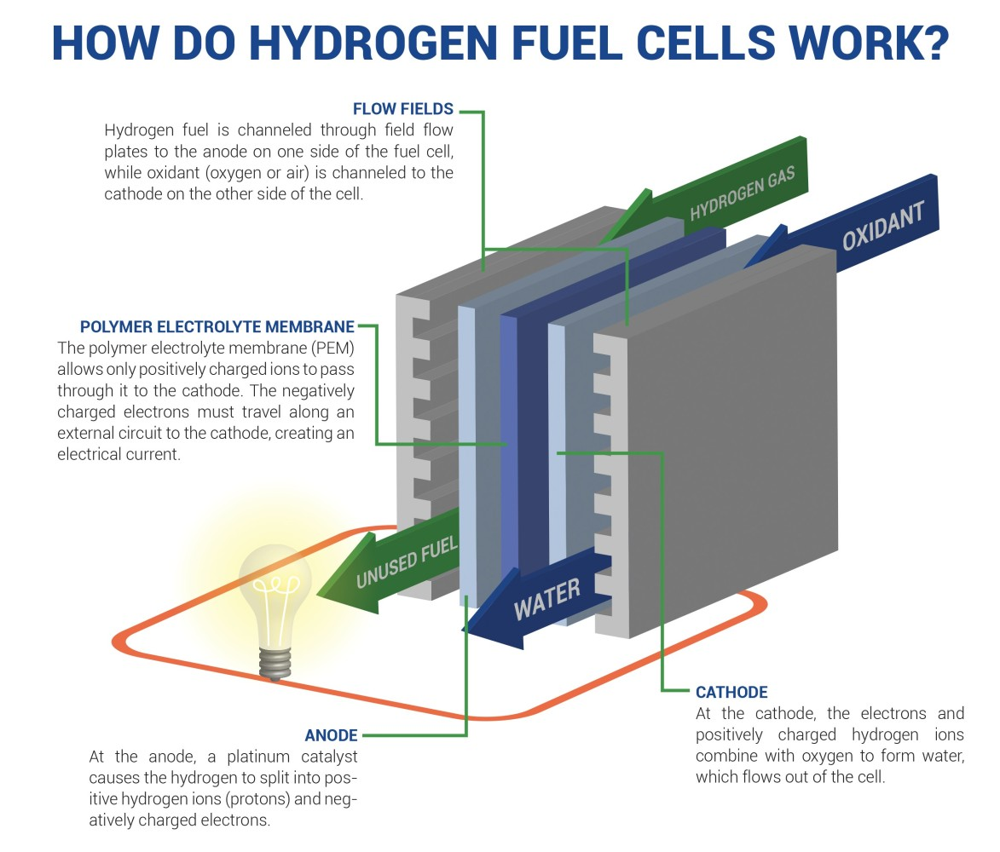
Comparison Between Hydrogen Fuel Cells and Batteries
Unlike lithium-ion batteries, hydrogen fuel cells offer continuous power without the need for recharging. While batteries degrade over time, fuel cells maintain performance as long as hydrogen is available. However, batteries currently have a more developed infrastructure.
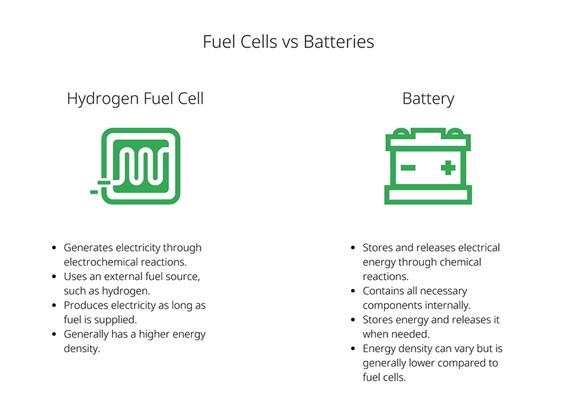
Key Advantages of Hydrogen Fuel Cells
- Energy Density and Weight: Hydrogen has a significantly higher energy density than batteries—approximately 120 MJ/kg compared to 45.5 MJ/kg for diesel. This allows vehicles powered by hydrogen fuel cells (HFCVs) to be lighter and carry heavier payloads over longer distances. For instance, a truck designed to travel 800 kilometers could save up to 2 tons in weight when using hydrogen fuel cells instead of batteries.
- Refueling Time: HFCVs can be refueled in about five minutes, making them more suitable for applications requiring quick turnaround times, such as commercial trucking. In contrast, battery electric vehicles (BEVs) can take several hours to recharge fully.
- Efficiency: Fuel cells are more efficient than internal combustion engines, achieving energy conversion efficiencies of up to 60%, while typical combustion engines operate at around 20-30% efficiency. This efficiency translates into lower emissions and better overall performance for HFCVs.
- Zero Emissions: The only byproduct of hydrogen fuel cells is water vapor, making them zero-emission vehicles in operation. This contrasts with the lifecycle emissions associated with battery production and electricity generation for BEVs.
- Decentralized Power Supply: The decentralization aspect of hydrogen fuel cells offers a pathway to energy independence for rural and remote areas, often underserved by traditional power grids. In many such locations, extending the central grid is either technically challenging or prohibitively expensive. Hydrogen fuel cells can serve as a standalone power solution, harnessing locally available renewable resources like solar and wind to produce hydrogen. This reduces reliance on fossil fuel imports and supports sustainable development by tapping into clean energy sources.
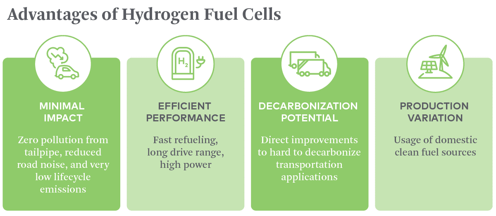
Challenges of Hydrogen Fuel Cells
- Energy-Intensive Processes: Traditional hydrogen production methods, like steam methane reforming, are energy-intensive and often rely on fossil fuels, which can undermine the environmental benefits of hydrogen as a clean energy source. The development of green hydrogen, produced from renewable energy sources, is a potential solution but is still in the early stages of commercialization.
- Limited Refueling Stations: The current infrastructure for hydrogen refueling is insufficient. There are few refueling stations, which poses a significant barrier to the adoption of hydrogen fuel cell vehicles (HFCVs). Expanding this infrastructure requires substantial investment and coordination among various stakeholders.
- High Production and Storage Costs: The costs associated with producing and storing hydrogen remain high. This includes the expense of fuel cell components and the infrastructure needed for hydrogen distribution. The economic viability of hydrogen as a fuel source depends on reducing these costs through technological advancements and economies of scale.
- Technical Difficulties: Hydrogen has a low volumetric energy density, making it challenging to store and transport safely. Effective storage solutions, such as high-pressure tanks or cryogenic storage, are necessary to manage these challenges. Additionally, expanding existing natural gas pipelines for hydrogen use presents logistical hurdles.
- Flammability and Leakage: Hydrogen is highly flammable and requires careful handling. Safety measures must be established throughout the hydrogen supply chain to prevent accidents. Furthermore, hydrogen leakage during transport can contribute to greenhouse gas emissions, as leaked hydrogen can extend the lifespan of methane in the atmosphere.
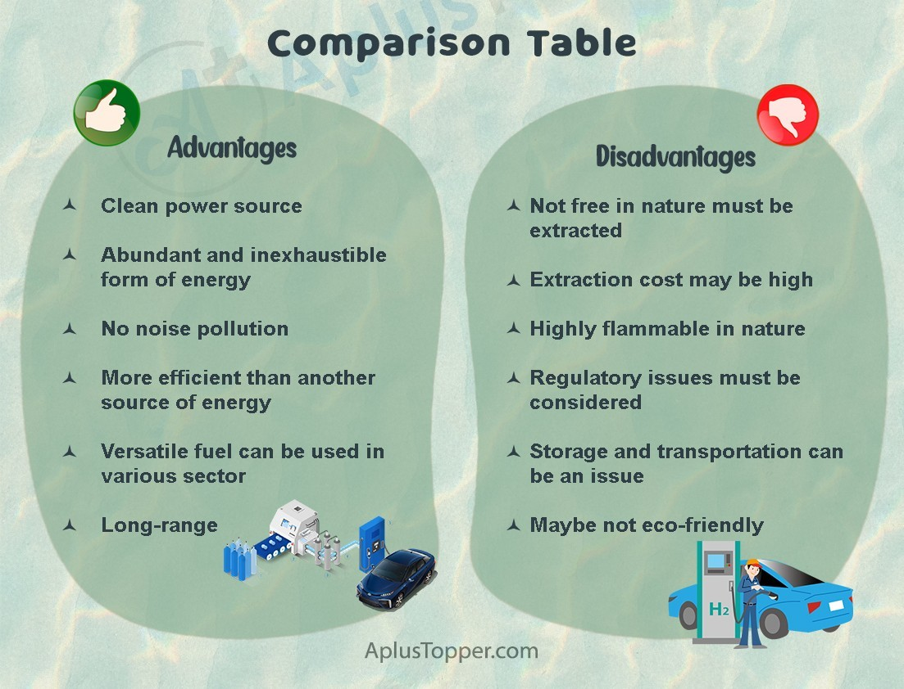
Applications of Hydrogen Fuel Cells
- Transportation Hydrogen fuel cells can power various transportation modes such as cars, buses, trucks, and trains. They are particularly beneficial for larger vehicles where battery weight could be prohibitive.
- Industrial Processes Hydrogen is used in oil refining, metal treatment, fertilizer production, and food processing. It is also used to produce hydrotreated vegetable oil for renewable diesel.
- Emergency Backup Power Fuel cells can provide emergency backup power to critical facilities like hospitals and data centers.
- Stationary Power Hydrogen can replace grid electricity for critical-load facilities like data centers.
- Energy Storage Hydrogen has the potential to indirectly store energy for electric power generation and can store energy for long periods. Surplus renewable energy, such as wind or solar power, can be used to produce hydrogen through electrolysis, effectively storing and utilizing this energy when demand exceeds supply.
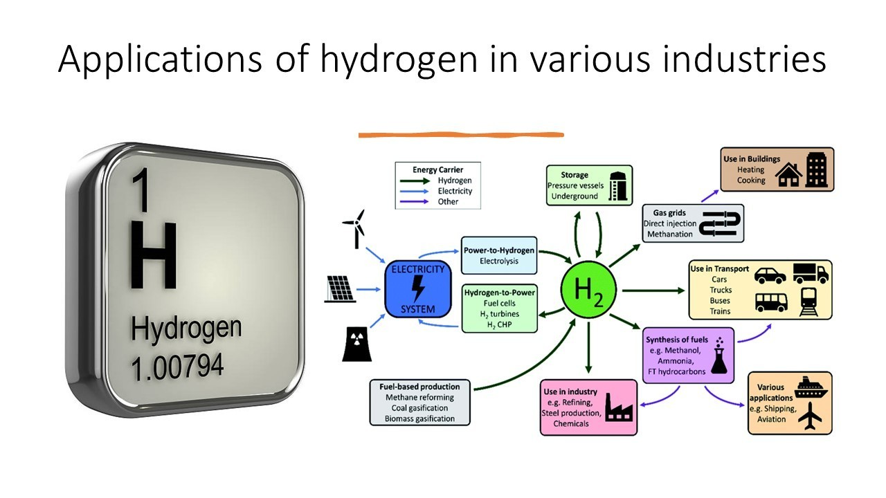
Case Study Pioneering Hydrogen Fuel Cell Vehicles
- Toyota Motor Corporation has been a frontrunner in hydrogen fuel cell technology with its flagship vehicle, the Mirai Toyota . Launched in 2014, the Mirai is one of the first mass-produced hydrogen fuel cell vehicles (HFCVs) available to consumers. It boasts a range of over 300 miles and can be refueled in about five minutes. This demonstrates the viability of hydrogen fuel cells for personal transportation.
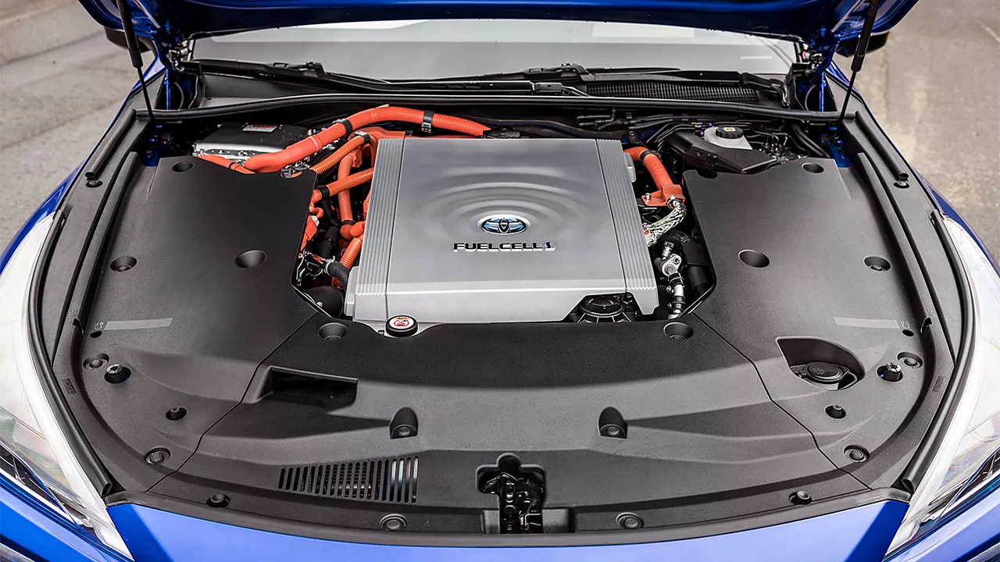
- Germany has been at the forefront of adopting hydrogen fuel cell technology for public transportation. Initiatives like the "H2Bus" project in Hamburg and the deployment of hydrogen buses in Cologne have demonstrated the technology's viability.
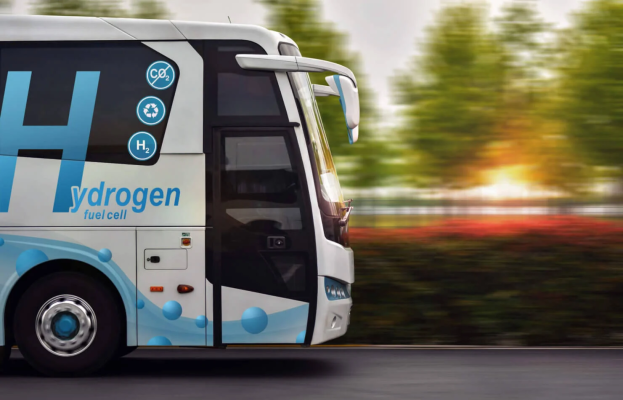
- HYFLEET LIMITED : Live: This project in Australia is exploring the use of hydrogen fuel cell buses for public transport. The trial aims to demonstrate the feasibility of large-scale hydrogen deployment in public transportation and contribute to decarbonizing the sector.
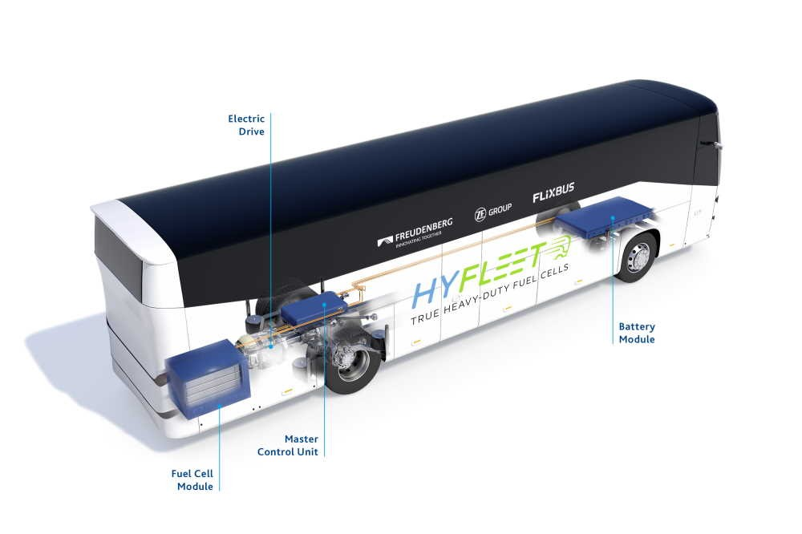
- The Port of Los Angeles is exploring hydrogen fuel cells as part of its strategy to decarbonize port operations and reduce emissions from heavy-duty vehicles. Collaborations with companies like Plug Power and Air Products have facilitated the development of hydrogen production and storage facilities at the port.
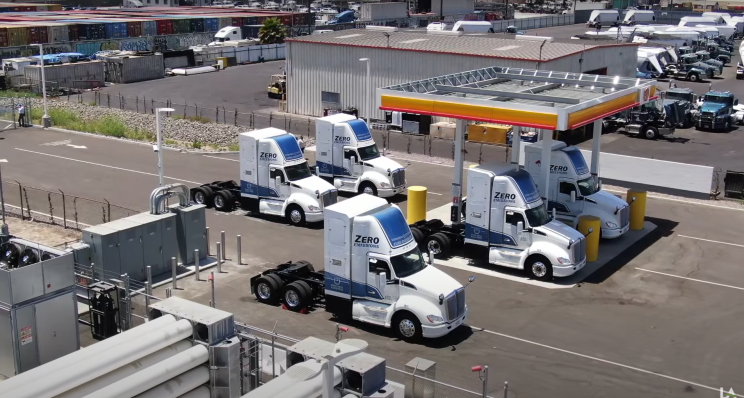
- Bloom Energy Microgrids: Bloom Energy uses fuel cells to provide reliable and clean power to businesses and communities. Their microgrids offer an alternative to traditional power grids, increasing resilience and reducing reliance on fossil fuels. This highlights the application of fuel cells in stationary power generation.
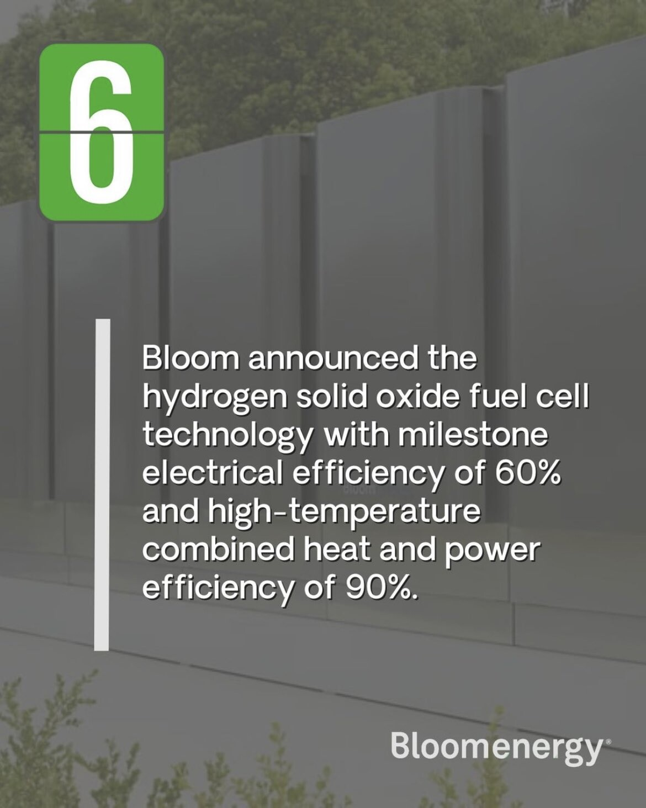
Green Hydrogen: Important as a fuel for the future
Hydrogen is important for the future because it can be a versatile, clean, and abundant energy carrier. It can store surplus renewable energy and release it when needed, easing a shift to more sustainable energy systems. Hydrogen can decarbonize sectors where direct electrification is challenging, like heavy industry and long-haul transport, and contribute to energy security.
Hydrogen Cells Now versus Tomorrow
Currently, hydrogen cells are used in various niche markets, but their use is expected to grow significantly in the coming years. They will become more cost-effective as production scales up and the technology becomes mature. Future hydrogen cells are expected to be more efficient and affordable.
Hydrogen is a potential paradigm shifter that can play a major role alongside battery electrification and renewable fuels in creating the carbon-neutral societies of tomorrow. Hydrogen is an energy carrier with qualities that can help reduce the net sum of greenhouse gas emissions. However, while battery-electric vehicles and machines and biofuels can decarbonize transport already today, large scale hydrogen powered transports and infrastructure still belong to the future.
Hydrogen itself is a colorless gas but there are around nine color codes that explain the source, or process used to make it.
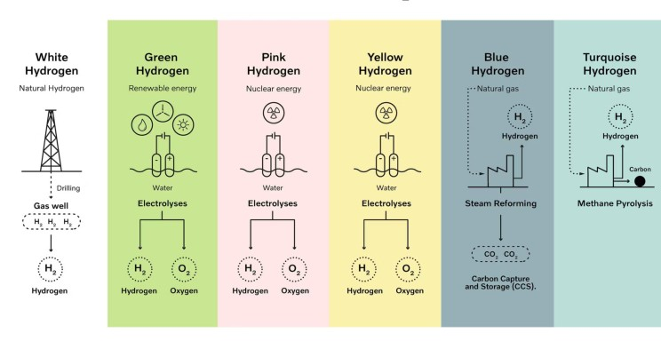
What needs to be done to make the shift possible?
To shift to hydrogen on a large scale, investments in production, storage, and distribution infrastructure are needed. Developing cost-effective methods for producing green hydrogen from renewable sources is crucial. Additionally, governments and industries must collaborate to create incentives and regulations that encourage the adoption of hydrogen technologies.
Conclusion
Hydrogen fuel cells present a viable alternative to batteries, particularly in applications where weight and refueling time are critical factors. As research progresses and infrastructure develops, hydrogen could play a significant role in the transition toward sustainable transportation solutions. The synergy between hydrogen production from renewable sources and fuel cell technology could ultimately contribute to a cleaner energy future.